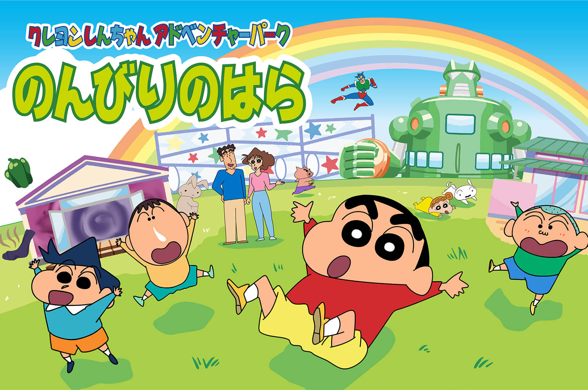

An anime adaptation of Crayon Shin-chan, produced by Shin-Ei Animation,
has aired in Japan on TV Asahi since April 13, 1992.
The series was originally directed by Mitsuru Hongo from 1992 to 1996, and was replaced by Keiichi Hara from 1996 to 2004.
Since 2004, the series is directed by Yuji Muto. The music in the series is composed by Toshiyuki Arakawa.
The series was originally going to end in 1994 and have its time-slot replaced by a remake of Umeboshi Denka.
However, because the series was a huge hit on TV Asahi, the network decided not to replace it.
An English subtitled version of Crayon Shin-chan ran on KIKU in Hawaii from December 18, 1993, until December 2001 when Vitello Productions acquired the rights.
The episodes were translated by Karlton Tomomitsu.
